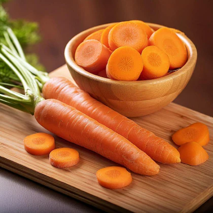
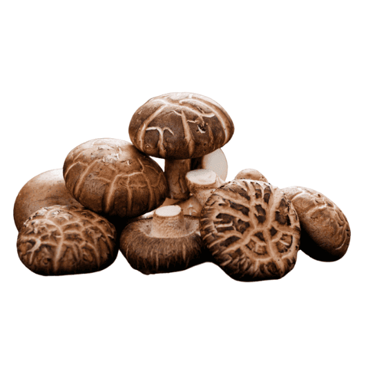
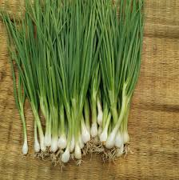

Minced Pork Napa Cabbage Soup
ស៊ុបស្ពៃបូកគោ
This Khmer soup is made with minced pork and napa cabbage simmered in a light, flavorful broth. It is simple, comforting, and perfect for everyday meals.
Ingredients
Minced Pork

300g
Buy NowNapa Cabbage
1 small head
Buy NowCarrot

1 small
Buy NowRaddis
1 small
Buy NowShiitake Mushrooms

100g
Buy NowDried Shrimp

4-5 pieces
Buy NowDried Stingray

1-2 pieces
Buy NowGarlic

3 cloves
Buy NowGreen Onion

2 stalks
Buy NowFish Sauce

1 tbsp
Buy NowBlack Pepper

½ tsp
Buy NowWater

1 liter
Buy NowGreen Onion

2 stalks
Buy NowCooking Oil

1 tbsp
Buy Now-
Step 1: Prepare ingredients
- Wash and cut napa cabbage into pieces
- Slice carrot and radish into small pieces
- Cut shiitake mushrooms
- Chop garlic, shallots, and green onions
-
Step 2: Stir-fry base
- Heat cooking oil in a pot
- Add garlic, dried shrimp, dried stingray and stir until fragrant
- Add shiitake mushrooms and stir-fry first
-
Step 3: Add water
- Pour in water
- Bring to a boil
-
Step 4: Add minced pork
- Add minced pork into the boiling soup
- Stir gently to separate the meat
- Cook until pork is fully done
-
Step 5: Add vegetables
- Add napa cabbage, carrot, and radish
- Cook until vegetables are tender
-
Step 6: Finish and serve
- Add fish sauce and black pepper to taste
- Add green onions
- Serve hot with rice